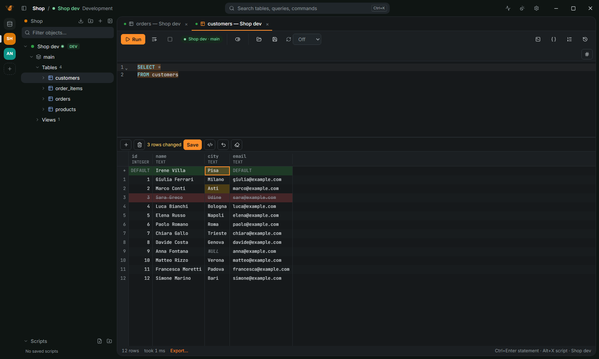

Modificare i dati

Modificare le righe nella griglia
- Apri una tabella dal navigatore, oppure esegui una query che legge una sola tabella.
- Fai doppio clic su una cella, premi
F2, o semplicemente scrivi, per modificarla.Shift+Deleteimposta a NULL le celle selezionate. Insertaggiunge una riga,Ctrl+Dduplica quella selezionata,Deletela elimina.- Le modifiche restano evidenziate finché non salvi. Usa Anteprima dell'SQL per leggere le istruzioni.
- Premi
Ctrl+S(o Salva le modifiche) per salvarle tutte, oppure nessuna se una fallisce.Ctrl+Zannulla le modifiche non ancora salvate.
Ogni salvataggio lascia uno script di annullamento che rimette a posto le righe. In modalità commit manuale le modifiche entrano nella transazione aperta.
Quando la griglia è in sola lettura
Una tabella ha bisogno di una chiave primaria, o di una chiave univoca su colonne non nulle, o di una chiave virtuale che scegli tu; altrimenti la griglia dice perché non si può modificare. Una connessione può anche vietare la modifica dei dati (pagina Aspetto e sicurezza delle sue impostazioni): le righe allora cambiano solo con SQL.
Modificare documenti, chiavi e righe senza SQL
Si modificano anche i risultati di Redis, Elasticsearch, Cassandra e MongoDB, con i loro comandi invece dell'SQL: Anteprima dell'SQL li mostra. Su MongoDB il risultato di un semplice find su una sola collezione si modifica per _id. Ogni modifica è una updateOne, insertOne o deleteOne, scritta con il tipo BSON della colonna; un numero modificato mantiene il tipo numerico che il documento memorizza, quando quel tipo lo contiene esattamente. La modifica di _id, di colonne di tipi misti e di campi con un . nel nome viene rifiutata, con il motivo. Su un replica set un salvataggio è tutto o niente; su un server standalone i comandi vengono eseguiti uno dopo l'altro e l'errore dice quanti sono stati salvati. Vedi MongoDB.
Modificare molte celle insieme
Seleziona le celle e usa Modifica la selezione nel menu della griglia: un valore, NULL o DEFAULT in ogni cella, trova e sostituisci nelle celle di testo, o una sequenza di numeri. Ctrl+Alt+D riempie verso il basso a partire dalla prima riga (⌃⇧D su macOS). Cambiano solo le righe caricate nella griglia, e il risultato sono modifiche in sospeso che vedi in anteprima, salvi o annulli insieme.
Incolla da un foglio di calcolo con Ctrl+V sulle celle, oppure con Ctrl+Shift+V come nuove righe.
Caricare un file in una cella
Dal menu della griglia, o dal pulsante … dell'editor della cella: i byte vanno nelle colonne binarie e il testo UTF-8 nelle colonne di testo. I file oltre 50 MB chiedono prima conferma; quelli oltre 200 MB vengono rifiutati.
Righe proposte da un agente
Quando un agente chiama propose_edits, la tabella si apre nel suo visualizzatore di dati con le righe proposte come modifiche in sospeso, colorate come le tue. Non viene scritto nulla finché non le salvi; scartale per rifiutarle. Vedi Agenti.
Altro
Chiavi esterne, array, l'editor delle tabelle (colonne, chiavi, indici) e i dati finti sono in FEATURES.md. Le connessioni di produzione chiedono conferma per ogni modifica: vedi Sicurezza.